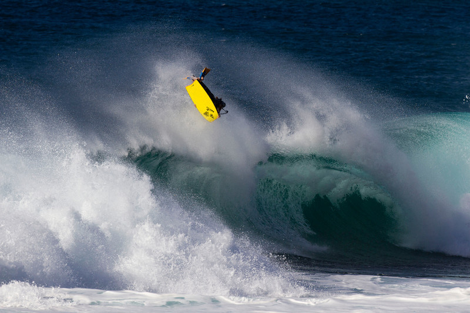

Guilherme Tâmega construiu uma carreira que ultrapassa a dimensão dos títulos mundiais. O carioca ajudou a profissionalizar o bodyboard, tornou-se referência em ondas pesadas, enfrentou diferentes gerações e levou o Brasil ao centro da modalidade em um período decisivo para a consolidação do circuito internacional.
Ele é o maior campeão brasileiro e o atleta mais vitorioso desde a fase em que o bodyboard passou a organizar um circuito mundial regular por temporadas. Seus seis títulos fazem dele o competidor mas vitorioso dentro da era moderna do tour.
O início em Copacabana
Guilherme Calheiros Tâmega nasceu em 3 de setembro de 1972, no Rio de Janeiro, e cresceu perto da Praia de Copacabana. Antes de se firmar no bodyboard, experimentou o surfe e o bicicross. O contato decisivo com a modalidade aconteceu ainda na adolescência, em uma época na qual as pranchas eram difíceis de encontrar no Brasil e o esporte dava seus primeiros passos como atividade competitiva organizada.
Em abril de 1985, Tâmega ganhou uma Morey Boogie 139. Poucos meses depois, aos 13 anos, chegou à final de uma competição em Itacoatiara, Niterói. Mesmo ainda se adaptando ao uso das nadadeiras, terminou em segundo lugar e chamou a atenção de atletas mais experientes. Em 1988, viajou pela primeira vez ao North Shore de Oahu, enfrentou Pipeline e voltou ao Brasil para conquistar o título nacional amador.
A entrada no profissional aconteceu em 1989. Naquele ano, Tâmega disputou uma final internacional na Austrália e conquistou seu primeiro título brasileiro profissional. A evolução, no entanto, sofreu uma interrupção em 1990, quando uma lesão no bicicross o deixou fora da água por cinco meses.
O período afastado acabou abrindo outra frente importante em sua trajetória. Tâmega começou a desenvolver e comercializar pranchas de bodyboard, atividade que mais tarde se transformaria em um dos pilares de sua vida profissional fora das competições.
O primeiro título mundial
A consagração internacional chegou em 1994, no Havaí. Ele conquistou seu primeiro campeonato mundial em Pipeline, uma das ondas mais perigosas, técnicas e simbólicas dos esportes de prancha.
A disputa foi realizada em condições estimadas entre 12 e 15 pés. Para garantir o título, o brasileiro combinou um tubo duplo com um el rollo em uma seção crítica. O desempenho reuniu características que definiriam sua carreira: coragem, potência, escolha agressiva de ondas e capacidade de executar manobras sob enorme pressão.
A vitória teve importância esportiva e simbólica. Ele venceu justamente em Pipeline, palco central quando se remete a ondas clássicas. Tâmega pertence à mesma geração de Kelly Slater. Nascidos em 1972, os dois chegaram ao topo dos esportes de prancha nos anos 1990, construindo trajetórias históricas em modalidades diferentes. Enquanto Slater começava a transformar o circuito mundial de surfe e construía uma relação permanente com o Havaí, Tâmega fazia o mesmo pelo bodyboard, levando o Brasil ao topo da modalidade. Essa proximidade de geração e de cenário ajuda a conectar sua trajetória à história de Kelly Slater no surfe mundial. Em 1994, porém, Pipeline era de Tâmega: foi ali que o carioca conquistou seu primeiro título mundial e iniciou a fase mais vitoriosa de sua carreira.
O domínio na era do circuito
Em 1995, a Global Organisation of Bodyboarders passou a comandar uma nova fase do tour profissional. A criação de uma temporada por etapas exigia mais do que uma grande atuação em uma competição isolada. O campeão precisava manter regularidade em diferentes praias, países, tipos de onda e confrontos.
Tâmega tornou-se o grande nome dessa fase. Depois da conquista de 1994, venceu novamente em 1995, 1996 e 1997. O tricampeonato consecutivo no novo formato confirmou que o resultado de Pipeline não havia sido um episódio isolado.
Após perder os campeonatos de 1998 e 1999 para o sul-africano Andre Botha e ficar fora do topo em 2000, ele recuperou o domínio. Foi campeão em 2001 e repetiu o feito em 2002, chegando ao sexto título mundial. A distância de oito anos entre a primeira e a última conquista também evidencia sua longevidade competitiva.
Os seis títulos mundiais de Guilherme Tâmega:
- 1994 — primeiro título mundial, conquistado em Pipeline
- 1995 — campeão do GOB World Tour
- 1996 — bicampeão consecutivo no circuito
- 1997 — terceiro título seguido no novo tour
- 2001 — retorno ao topo do mundo
- 2002 — hexacampeonato mundial
Além das seis conquistas, Tâmega terminou outras seis temporadas como vice-campeão mundial. A sequência de resultados mostra que sua força não se limitava às campanhas vitoriosas. Durante mais de uma década, ele permaneceu constantemente próximo do topo, mesmo com o surgimento de novos adversários e com as mudanças de organização do circuito.
A rivalidade dentro do mar
Mike Stewart foi inspiração, rival e parâmetro para Guilherme Tâmega. O havaiano já era uma lenda quando o brasileiro começou a ganhar espaço internacional. Stewart dominava Pipeline, possuía leitura excepcional de tubos e havia ajudado a elevar o nível técnico do bodyboard desde os primeiros anos da modalidade.
Tâmega surgiu com uma postura diferente, embora igualmente revolucionária. Seu estilo era baseado em força, velocidade, preparo físico e ataque constante às partes mais críticas da onda. A meta não era somente competir contra Stewart, mas superá-lo justamente nos ambientes em que o havaiano parecia praticamente imbatível.
Os dois mantinham respeito fora da água, mas os confrontos eram intensos. Tâmega reconheceu Stewart como seu maior rival e afirmou que a vontade de derrotá-lo era especialmente forte. A disputa também ajudou a transformar a preparação dos atletas. Ambos estiveram entre os pioneiros do bodyboard profissional na valorização da alimentação, do condicionamento físico e de uma rotina de alto rendimento.
A comparação entre os dois, portanto, não precisa diminuir nenhum dos lados. Stewart é o nome mais vitorioso na contagem histórica tradicional e um dos responsáveis pela formação técnica do esporte. Tâmega foi quem dominou a fase seguinte, consolidada em torno de um circuito internacional, e se tornou o maior competidor brasileiro que o bodyboard já produziu.
Conquistas nacionais
O domínio também apareceu no cenário nacional. Ele conquistou seis campeonatos brasileiros profissionais, em 1989, 1991, 1992, 1993, 1994 e 2000. A sequência de quatro títulos entre 1991 e 1994 acompanhou sua ascensão até o primeiro campeonato mundial.
O brasileiro ainda foi duas vezes campeão em competições mundiais organizadas pela International Surfing Association, em 1996 e 2000. Esses resultados são separados dos seis títulos do principal circuito profissional e ampliam o tamanho de seu currículo internacional.
Entre suas conquistas também aparecem um título norte-americano e um campeonato pan-americano. Mais do que acumular troféus, Tâmega venceu em diferentes sistemas competitivos e diante de adversários de várias escolas do bodyboard.
O tricampeonato em Shark Island
Poucas conquistas representam tão bem a coragem de Guilherme Tâmega quanto os três títulos consecutivo do Shark Island Challenge, na Austrália.
Tâmega venceu o evento em 2002, 2003 e 2004. A onda é conhecida por quebrar sobre uma bancada de recife extremamente rasa, formando tubos rápidos e pesados. A margem para erro é pequena, e o desempenho exige comprometimento absoluto desde a entrada na onda.
A sequência transformou o brasileiro no primeiro atleta a ganhar três edições consecutivas da competição. O resultado reforçou uma das marcas de sua carreira: quanto mais difícil e perigosa era a onda, maior parecia ser sua capacidade de competir.
Potência e mentalidade competitiva
Tâmega não ficou conhecido por uma abordagem conservadora. Seu bodyboard era explosivo, físico e agressivo. Ele buscava tubos profundos, realizava manobras com muita projeção e atacava seções que outros competidores poderiam evitar.
A intensidade também aparecia na preparação. Em um período no qual o bodyboard ainda lutava por estrutura profissional, o brasileiro tratava sua carreira como um atleta de alto rendimento. Treinamento, alimentação, conhecimento do equipamento e estudo das condições faziam parte do processo.
Essa mentalidade explica a regularidade. Em uma modalidade influenciada pelo mar, pela escolha das ondas, pela prioridade e pelas notas dos juízes, permanecer durante tantos anos entre os candidatos ao título exige mais do que talento. Exige capacidade de adaptação, controle emocional e disciplina.
Embora bodyboard e surfe sejam modalidades diferentes, com equipamentos, técnicas e circuitos próprios, a trajetória de Tâmega faz parte do crescimento mais amplo dos esportes de prancha no país, que anos depois viria Gabriel Medina com primeiro título mundial de um surfista brasileiro na WSL, iniciando um período de domínio vitorioso da Braziliam Storm.
A aposentadoria e a continuidade nas competições
Guilherme Tâmega anunciou em 2015 que deixaria de disputar regularmente o circuito profissional. A decisão encerrou uma trajetória de aproximadamente três décadas no alto nível, mas não significou o afastamento definitivo das competições.
O brasileiro continuou participando de eventos especiais e categorias destinadas a atletas históricos. Em setembro de 2024, venceu a categoria GranLegends do São Conrado Classic, no Rio de Janeiro. O resultado mostrou que a competitividade permanecia presente mesmo muitos anos depois do auge no circuito mundial.
GT Boards e o desenvolvimento de pranchas
A produção de equipamentos tornou-se uma extensão natural da carreira. O interesse começou durante a recuperação da lesão sofrida em 1990 e evoluiu até a criação da GT Boards.
A experiência em ondas de diferentes tamanhos e características permitiu que Tâmega participasse diretamente do desenvolvimento de modelos. O trabalho também prolongou sua influência sobre novas gerações, que passaram a ter acesso a equipamentos associados ao conhecimento de um dos competidores mais bem-sucedidos da modalidade.
De campeão mundial a salva-vidas em Pipeline
Depois da carreira profissional, Tâmega transformou sua experiência no oceano em uma nova atividade. Morando no Havaí, entrou para o sistema Honolulu Ocean Safety e passou a trabalhar como salva-vidas.
Após atuar em outras praias da ilha de Oahu, chegou ao North Shore e a Pipeline. O local que havia sido palco de seu primeiro título mundial tornou-se também seu ambiente de trabalho.
Em dezembro de 2023, ele participou do atendimento ao surfista João Chianca após um grave acidente em Pipeline. O conhecimento adquirido em décadas enfrentando ondas pesadas passou a ser usado não para vencer campeonatos, mas para ajudar a proteger vidas em um dos locais mais perigosos do oceano.
Uma lenda do bodyboard
Guilherme Tâmega é o maior campeão brasileiro da história do bodyboard e o principal vencedor da era moderna do circuito mundial. A ressalva sobre Mike Stewart não reduz seu tamanho. Pelo contrário, situa o brasileiro ao lado do maior nome do período pioneiro e ajuda a mostrar como os dois representaram fases diferentes da evolução da modalidade.
Stewart dominou a época em que Pipeline concentrava a decisão mundial e é reconhecido institucionalmente como nove vezes campeão. Tâmega venceu a edição de 1994 e depois comandou o período de consolidação do tour internacional, conquistando outros cinco títulos até 2002.
A grandeza dele está na soma dessas dimensões. Ele não foi apenas um campeão que venceu muito. Foi um atleta que mudou a maneira de competir, representou o Brasil nas ondas mais respeitadas do planeta e permaneceu ligado ao oceano depois de deixar o circuito. De Copacabana a Pipeline, sua trajetória transformou força, coragem e obsessão competitiva em um dos maiores legados dos esportes de prancha.